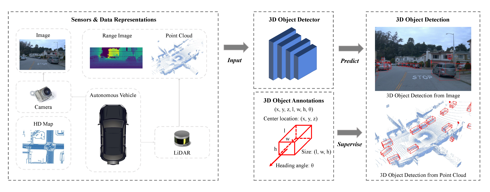
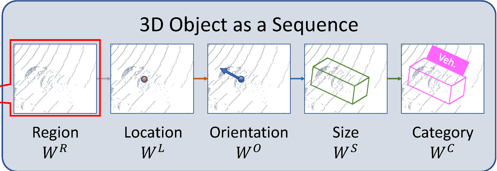
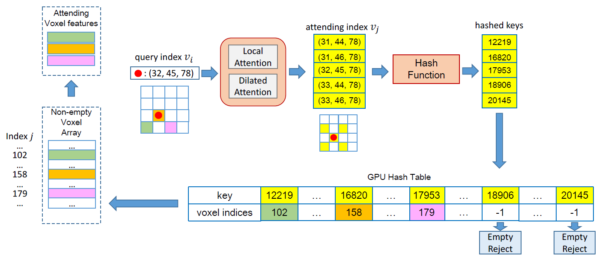
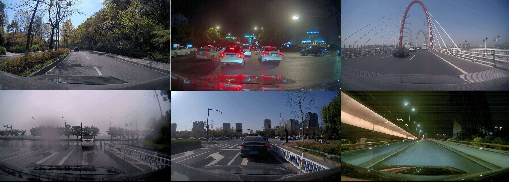
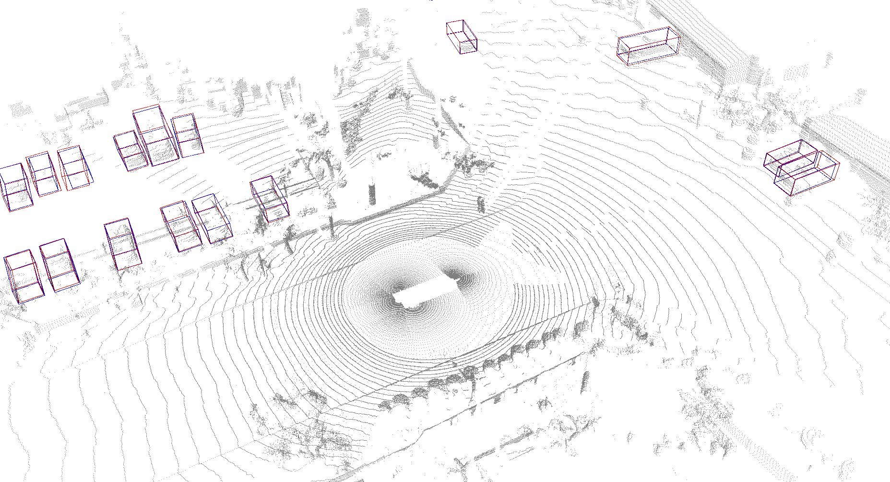
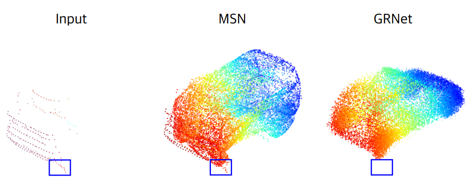
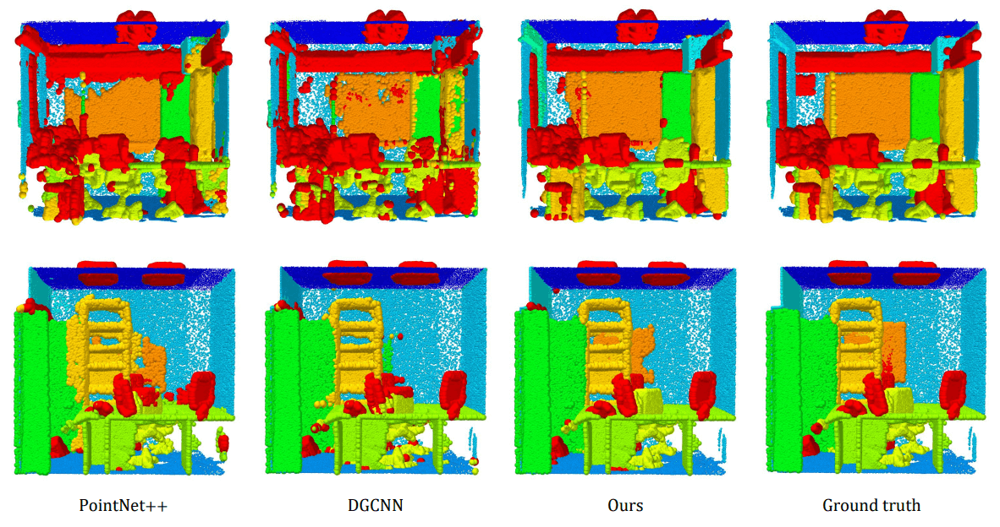

Jiageng Mao Ph.D. Student
Geometry, Vision, and Learning Lab
Department of Computer Science
University of Southern California
Los Angeles, USA
Email: jiagengm [at] usc [dot] edu |

|
Biography
I am a Ph.D. Student at USC and a member of Geometry, Vision, and Learning (GVL) Lab, advised by Professor Yue Wang.
My research encompasses the broad areas of Computer Vision, Robotics, and Artificial Intelligence. My objective is to equip robots with open-world capabilities for perceiving, reasoning, and planning. Specifically, my research is focusing on the following aspects: 1) Foundation models for robot perception and planning; 2) Data-driven end-to-end solutions for autonomous vehicles; 3) Open-world 3D object and scene understanding.
I obtained my M.Phil. degree at MMLab, Chinese University of Hong Kong, and my B.Eng. degree at Zhejiang University.
Recent Updates
- Check out our recent IJCV 2023 paper 3D Object Detection for Autonomous Driving: A Comprehensive Survey. A 55-page survey that comprehensively discusses all aspects of 3D object detection in the context of autonomous driving!
- Check out our recent CVPR 2023 paper CLIP2: Contrastive Language-Image-Point Pretraining from Real-World Point Cloud Data. The first attempt to lift up the vision-language foundation model CLIP to the 3D space, leveraging real-world image and point cloud data!
Selected Publications [Google Scholar]
|
 |
3D Object Detection for Autonomous Driving: A Comprehensive Survey
Jiageng Mao, Shaoshuai Shi, Xiaogang Wang, Hongsheng Li.
International Journal of Computer Vision (IJCV), 2023.
[Code]
A 55-page survey that comprehensively discusses all aspects of 3D object detection in the context of autonomous driving. |

|
CLIP2: Contrastive Language-Image-Point Pretraining from Real-World Point Cloud Data
Yihan Zeng*, Chenhan Jiang*, Jiageng Mao, Jianhua Han, Chaoqiang Ye, Qingqiu Huang, Dit-Yan Yeung, Zhen Yang, Xiaodan Liang, Hang Xu.
IEEE Conference on Computer Vision and Pattern Recognition (CVPR), 2023.
The first attempt to lift up the vision-language foundation model CLIP to the 3D space, leveraging real-world image and point cloud data. |
|
 |
Point2Seq: Detecting 3D Objects as Sequences
Yujing Xue*, Jiageng Mao*, Minzhe Niu, Hang Xu, Michael Bi Mi, Wei Zhang, Xiaogang Wang, Xinchao Wang.
IEEE Conference on Computer Vision and Pattern Recognition (CVPR), 2022.
[Code]
The first attempt to represent 3D objects as words and leverage the paradigm of language models to resolve the 3D object detection problem. |
|
 |
Voxel Transformer for 3D Object Detection
Jiageng Mao*, Yujing Xue*, Minzhe Niu, Haoyue Bai, Jiashi Feng, Xiaodan Liang, Hang Xu, Chunjing Xu.
International Conference on Computer Vision (ICCV), 2021.
[Code]
The first Transformer-based framework for voxel data processing. Selected into the Stanford CS348n course. |
|
 |
One Million Scenes for Autonomous Driving: ONCE Dataset
Jiageng Mao*, Minzhe Niu*, Chenhan Jiang, Hanxue Liang, Jingheng Chen, Xiaodan Liang, Yamin Li, Chaoqiang Ye, Wei Zhang, Zhenguo Li, Jie Yu, Chunjing Xu, Hang Xu.
Neural Information Processing Systems (NeurIPS), 2021.
[Code]
The first large-scale real-world autonomous driving dataset focusing on data-efficient learning for driving applications. |
|
 |
Pyramid R-CNN: Towards Better Performance and Adaptability for 3D Object Detection
Jiageng Mao, Minzhe Niu, Haoyue Bai, Xiaodan Liang, Hang Xu, Chunjing Xu.
International Conference on Computer Vision (ICCV), 2021.
[Code]
A high-performance 3D object detector for autonomous vehicles. Ranking 1st on the Waymo Open dataset LiDAR detection leaderboard (2021.3). |
|
 |
Grnet: Gridding Residual Network for Dense Point Cloud Completion
Haozhe Xie, Hongxun Yao, Shangchen Zhou, Jiageng Mao, Shengping Zhang, Wenxiu Sun.
European Conference on Computer Vision (ECCV), 2020.
[Code]
The first attempt to leverage convolutional frameworks to resolve the dense point cloud completion problem. |
|
 |
Interpolated Convolutional Networks for 3D Point Cloud Understanding
Jiageng Mao, Xiaogang Wang, Hongsheng Li.
International Conference on Computer Vision (ICCV), 2019.
The first attempt to tackle irregular point cloud data with discrete convolutional kernels. Selected as oral presentations (Top 4%). |
Honors and Awards
-
Full Oral presentations (acceptance rate about 2%-4%) at ICCV'19.
Hong Kong PhD Fellowship, 2018.
National Scholarship, 2016.
National Scholarship, 2015.
Top-10 Outstanding Students at Zhejiang University, 2016.
First-Class Scholarship for Outstanding Students, 2015, 2016, 2017.
First-Class Scholarship for Academic Excellence, 2015, 2016, 2017.
Professional Activities
- Conference Review: IEEE Conference on Computer Vision and Pattern Recognition (CVPR) 2021, 2022, 2023. International Conference on Computer Vision (ICCV) 2021, 2023. European Conference on Computer Vision (ECCV) 2022. Conference on Neural Information Processing Systems (NeurIPS) 2021, 2022, 2023. Internation Conference on Machine Learning (ICML) 2023. International Conference on Robotics and Automation (ICRA) 2023. International Conference on 3D Vision (3DV) 2022.
- Journal Review: IEEE Transactions on Pattern Analysis and Machine Intelligence (T-PAMI). IEEE Transactions on Robotics (T-RO). IEEE Transaction on Image Processing (T-IP). IEEE Robotics and Automation Letters (RA-L). Computer Vision and Image Understanding (CVIU). Pattern Recognition Letters (PRL). Pattern Recognition (PR). Journal of Visual Communication and Image Representation. Computers & Graphics. IEEE Sensors Journal. Neurocomputing.
Other Experiences
- Visiting Student | MARS Lab, IIIS, Tsinghua University, China | Jun. 2023 – Aug. 2023 Advisor: Prof. Hang Zhao Topic: Foundation Models for Autonomous Driving.
- Research Intern | Waabi Innovation, Canada | Sep. 2022 – March. 2023 Advisor: Prof. Raquel Urtasun Topic: Unified Perception and Prediction for Self-Driving Trucks.
- Research Intern | Noah's Ark Lab, China | Oct. 2020 – Aug. 2021 Advisor: Dr. Hang Xu & Prof. Xiaodan Liang Topic: High-Performance 3D Object Detection for Autonomous Vehicles.
- Research Intern | Sensetime Research, China | Feb. 2018 – Jun. 2018 Advisor: Dr. Junjie Yan Topic: Effective Model Designs for Visual Recognition.
Teaching
| ENGG 2030 Signal and Systems | Fall | 2019, 2020, 2021 |
| ENGG 1130 Multivariable Calculus | Spring | 2019, 2020, 2021 |